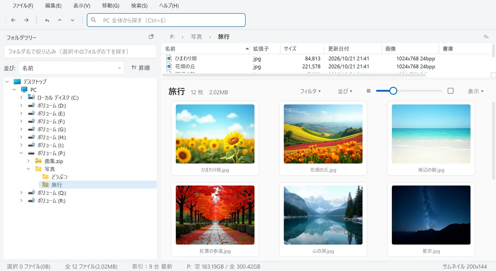
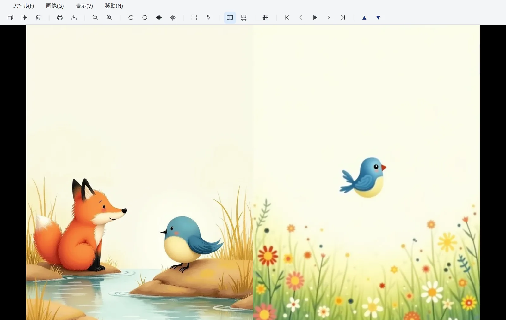
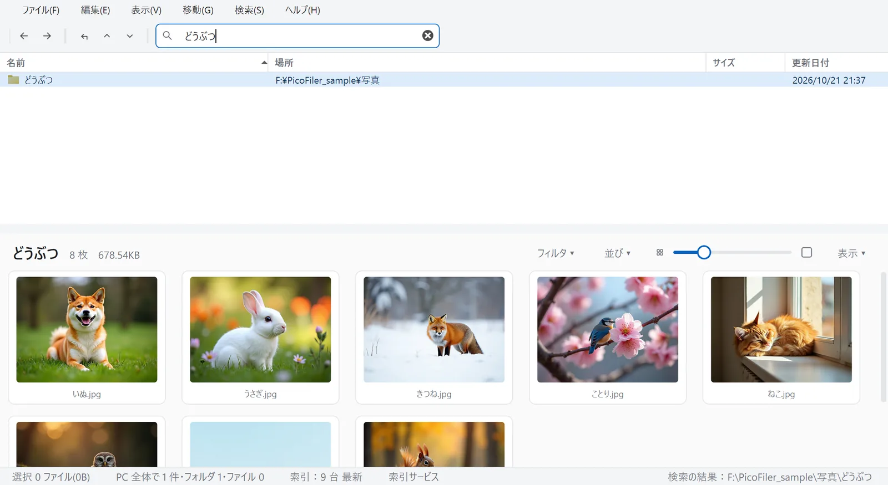

画像の山を、軽く見て、すっと片付ける。
PicoFiler は、たくさんの写真や漫画を見ながら整理するための画像ビューアです。フォルダツリー・ファイルの一覧・サムネイルを一つの画面に並べ、気になった画像はそのまま開いて、移動や複写までその場で済ませられます。

ZIP も RAR も、展開せずにそのまま開く
ZIP・7z・RAR・LZH の書庫を、フォルダと同じように開けます。左のツリーにも書庫が並ぶので、中の画像を探すのにいちいち展開する必要はありません。
- JPEG
- PNG
- GIF
- BMP
- WebP
- TIFF
- AVIF
- JPEG 2000
- PSD
漫画は見開きで、右綴じのまま
見開き表示は、日本の漫画と同じ右綴じです。表紙は 1 枚で、2 枚目から 2 枚ずつ組みます。もとから横長のページは 1 枚で出します。
ページの組がずれていたら「1 ページずらす」で組み直せます。全画面、スライドショー、マウスのカーソルを中心にした拡大縮小にも対応しています。

PC 全体から、名前で一瞬で探す
上の検索欄に名前を入れると、PC の中のフォルダ・画像・書庫を探します。見つかった行を選ぶと、右下にその場所の中身が並びます。
インストールのときに「索引サービス」を入れると、NTFS のディスクのファイル名の一覧を作って変更をすぐに反映するので、検索がほぼ待たずに終わります。一覧はこの PC の中だけに保存し、外部へは一切送りません。

見ながら、その場で片付ける
ツリーを並べる
フォルダツリーを 2 つ以上出して、ドラッグでファイルを移動・複写できます。
並べ替えと絞り込み
ツリーを名前・更新日時・作成日時で並べ替え、名前で絞り込めます。
キーとマウスを自分の手に
メイン画面のキーと、ビューアのキー・マウスの割り当てを、設定で変えられます。
見た目は 3 種類
明るいミスト・あたたかいペーパー・暗いグラファイトから選べます。
ダウンロードとインストール
- ダウンロードした setup.exe を開く
- 「Windows によって PC が保護されました」と出たら
コード署名をしていないため表示されます。［詳細情報］→［実行］で進んでください。
- 管理者の確認で「はい」
索引サービスを登録するために、管理者の権限を使います。
- 「索引サービスを入れる」を選ぶ（おすすめ）
入れなくても検索はできます。その場合はフォルダを順にたどるので、時間がかかります。
- 対応 OS
- Windows 10 / 11（64bit）
- 版
- 1.0.1
- 料金
- 無料（個人・法人とも）
- アンインストール
- Windows の「設定」→「アプリ」から。索引サービスの登録と、保存したファイル名の一覧も一緒に消えます。
Vector でも公開の手続き中です。
よくある質問
索引サービスは、何かを外部へ送りますか？
送りません。ファイル名の一覧はこの PC の中（ProgramData）にだけ保存し、読めるのはインストールした Windows のユーザーだけです。
索引サービスを入れずに使えますか？
使えます。PC 全体の検索は、フォルダを順にたどって探します。見る・整理する機能は、どちらでも同じです。
どの書庫が開けますか？
ZIP・7z・RAR・LZH です。分割された RAR は 1 巻目から開いてください。
無料です。気に入ったら、応援を
PicoFiler は無料で、広告もありません。気に入っていただけたら、寄付で応援していただけるとうれしいです。寄付は義務ではなく、寄付の有無で機能が変わることもありません。
Amazon ギフトカードで送る
- Amazon の E ギフトカードを開き、金額を選ぶ（自由な金額も入れられます）。
- 届け方は「Eメール」を選び、受取人に nanana03info@gmail.com を入れる。
- 贈り主の名前とメッセージは、入れても入れなくても構いません。
Ko-fi で送る（クレジットカード・海外からも）
ko-fi.com/nananasoft から、カード・Apple Pay・Google Pay で送れます。金額は自由に入れられます。